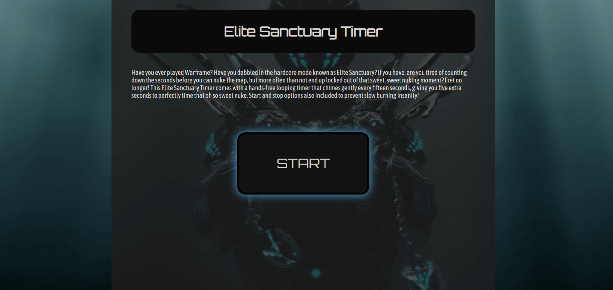

A JavaScript Exercise
Live WebsiteThis is a timer I made for fun as a solution to a game I enjoy: Warframe. The issue I encountered while playing a gamemode called Elite Sanctuary was keeping track of the cooldown time for an ability. I was tired of having to count in my head. Check it out live above!
This JavaScript-based project revolves around a looping timer that quietly beeps every fifteen seconds. The START button turns into the STOP button when clicked for minimal mouse movement. The background image is one I took of my game character.

Tools and languages used:
JavaScript | HTML | CSS | Visual Studio Code | Git | GitHub